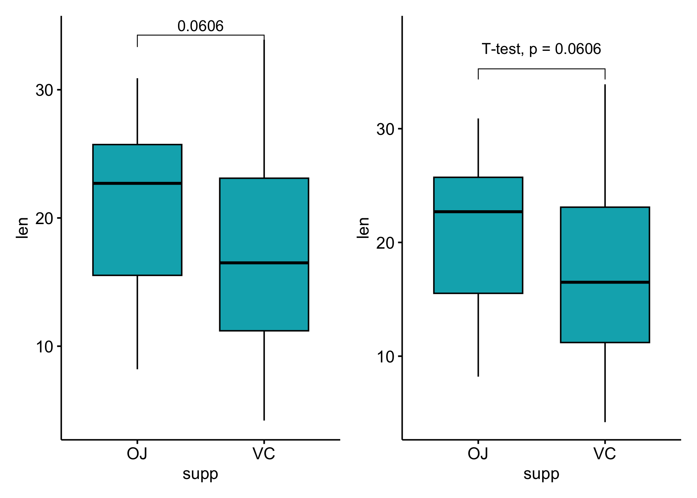
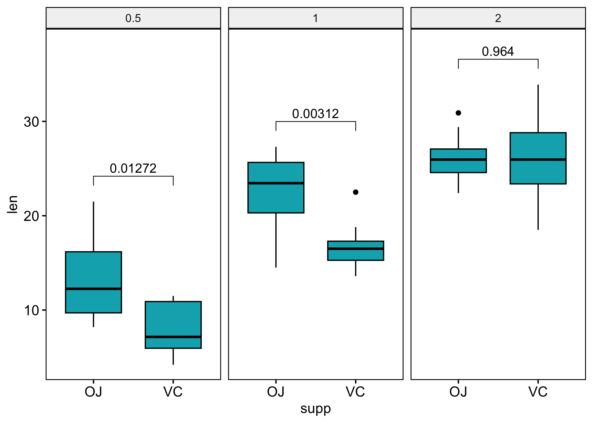
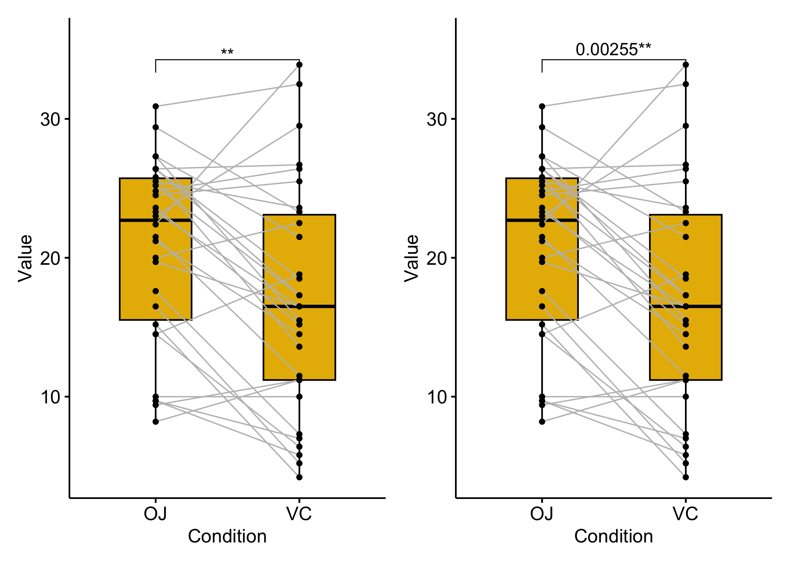
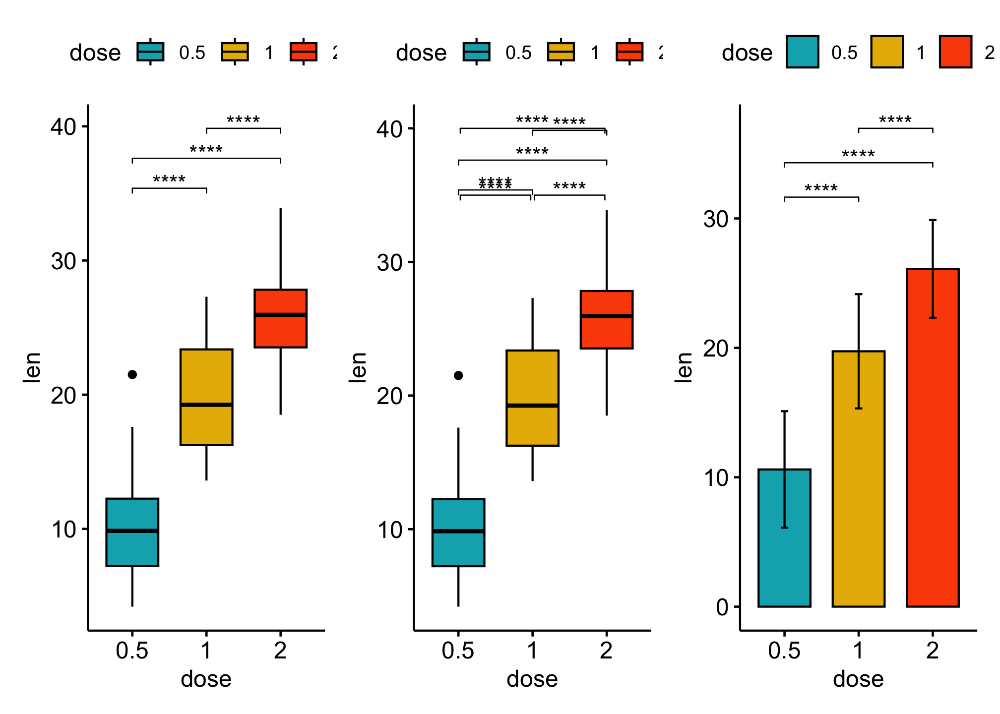
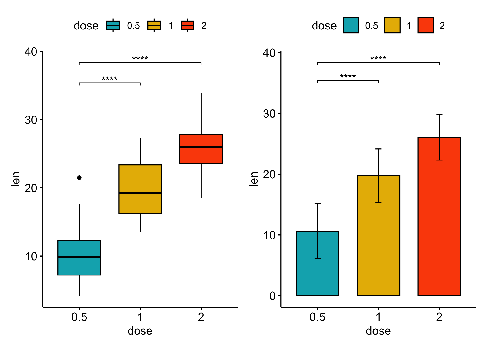
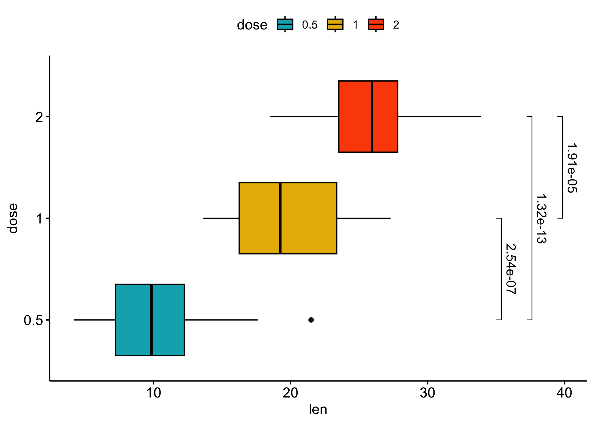

![]()
library(tidyverse)
library(ggpubr) # creat easily publication plots
library(rstatix) # pipe-friendly tools for easy statistical analyses
library(patchwork)How to compute and add p-values to basic ggplots using the rstatix and the ggpubr R packages.
- Perform pairwise mean comparisons and add the p-values onto basic box plots and bar plots.
- Display adjusted p-values and the significance levels onto the plots
- Format the p-value labels
- Specify manually the y position of p-value labels and shorten the width of the brackets
Note
- Compute easily statistical tests (
t_test()orwilcox_test()) using therstatixpackage - Auto-compute p-value label positions using the function
add_xy_position()[in rstatix package]. - Add the p-values to the plot using the function
stat_pvalue_manual()[in ggpubr package]. The following key options are illustrated in some of the examples:
- The option
bracket.nudge.yis used to move up or to move down the brackets. - The option
step.increaseis used to add more space between brackets. - The option
vjustis used to vertically adjust the position of the p-values labels
- In some situations, the p-value labels are partially hidden by the plot top border. In these cases, the ggplot2 function
scale_y_continuous(expand = expansion(mult = c(0, 0.1)))can be used to add more spaces between labels and the plot top border. The option mult = c(0, 0.1) indicates that 0% and 10% spaces are respectively added at the bottom and the top of the plot.
Basic Barplot or Boxplot with p-value
Comparing two means
# Transform `dose` into factor variable
df <- ToothGrowth
df$dose <- as.factor(df$dose)
head(df, 3)
## len supp dose
## 1 4.2 VC 0.5
## 2 11.5 VC 0.5
## 3 7.3 VC 0.5
### statistical test to compare two independent groups
stat_test <- df %>%
t_test(len ~ supp) %>%
add_significance() %>%
add_xy_position(x = "supp")
stat_test
## # A tibble: 1 × 13
## .y. group1 group2 n1 n2 statistic df p p.signif y.position
## <chr> <chr> <chr> <int> <int> <dbl> <dbl> <dbl> <chr> <dbl>
## 1 len OJ VC 30 30 1.92 55.3 0.0606 ns 34.3
## # ℹ 3 more variables: groups <named list>, xmin <dbl>, xmax <dbl>
p1 <- ggboxplot(df, x = "supp", y = "len", fill = "#00AFBB") +
stat_pvalue_manual(stat_test, label = "p")
### Customize p-value labels using glue expression
p2 <- ggboxplot(df, x = "supp", y = "len", fill = "#00AFBB") +
stat_pvalue_manual(
stat_test,
label = "T-test, p = {p}",
vjust = -1, #vertically adjust the position of the p-values labels
bracket.nudge.y = 1 # move up or to move down the brackets.
) +
scale_y_continuous(expand = expansion(mult = c(0.05, 0.15)))
p1 + p2
### grouped data
stat_test <- df %>%
group_by(dose) %>%
t_test(len ~ supp) %>%
adjust_pvalue() %>%
add_significance() %>%
add_xy_position(x = "supp")
stat_test
## # A tibble: 3 × 15
## dose .y. group1 group2 n1 n2 statistic df p p.adj
## <fct> <chr> <chr> <chr> <int> <int> <dbl> <dbl> <dbl> <dbl>
## 1 0.5 len OJ VC 10 10 3.17 15.0 0.00636 0.0127
## 2 1 len OJ VC 10 10 4.03 15.4 0.00104 0.00312
## 3 2 len OJ VC 10 10 -0.0461 14.0 0.964 0.964
## # ℹ 5 more variables: p.adj.signif <chr>, y.position <dbl>,
## # groups <named list>, xmin <dbl>, xmax <dbl>
ggboxplot(df,
x = "supp", y = "len", fill = "#00AFBB",
facet.by = "dose"
) +
stat_pvalue_manual(stat_test, label = "p.adj") +
scale_y_continuous(expand = expansion(mult = c(0.05, 0.10)))
### Show p-values if significant otherwise show ns
stat_test <- df %>%
group_by(dose) %>%
t_test(len ~ supp) %>%
adjust_pvalue() %>%
add_significance() %>%
add_xy_position("supp")
stat_test$custom_label <- ifelse(stat_test$p.adj <= 0.05, stat_test$p.adj, "ns")
stat_test
## # A tibble: 3 × 16
## dose .y. group1 group2 n1 n2 statistic df p p.adj
## <fct> <chr> <chr> <chr> <int> <int> <dbl> <dbl> <dbl> <dbl>
## 1 0.5 len OJ VC 10 10 3.17 15.0 0.00636 0.0127
## 2 1 len OJ VC 10 10 4.03 15.4 0.00104 0.00312
## 3 2 len OJ VC 10 10 -0.0461 14.0 0.964 0.964
## # ℹ 6 more variables: p.adj.signif <chr>, y.position <dbl>,
## # groups <named list>, xmin <dbl>, xmax <dbl>, custom_label <chr>
ggboxplot(df,
x = "supp", y = "len", fill = "#00AFBB",
facet.by = "dose"
) +
stat_pvalue_manual(stat_test, label = "custom_label") +
scale_y_continuous(expand = expansion(mult = c(0.05, 0.10)))### Compare paired samples
# Statistical test
stat_test <- df %>%
t_test(len ~ supp, paired = TRUE) %>%
add_significance() %>%
add_xy_position(x = "supp")
### boxplot with pvalue
p1 <- ggpaired(df, x = "supp", y = "len", fill = "#E7B800",
line.color = "gray", line.size = 0.4)+
stat_pvalue_manual(stat_test, label = "p.signif")+
scale_y_continuous(expand = expansion(mult = c(0.05, 0.10)))
### combined with significane level
p2 <- ggpaired(df,
x = "supp", y = "len", fill = "#E7B800",
line.color = "gray", line.size = 0.4
) +
stat_pvalue_manual(stat_test, label = "{p}{p.signif}") +
scale_y_continuous(expand = expansion(mult = c(0.05, 0.10)))
p1 + p2
Pairwise comparisons
### boxplot
stat_test <- df %>% t_test(len ~ dose) %>%
add_xy_position(x = "dose")
bxp <- ggboxplot(df,
x = "dose", y = "len", fill = "dose",
palette = c("#00AFBB", "#E7B800", "#FC4E07") # Box plots
) +
stat_pvalue_manual(
stat_test,
label = "p.adj.signif",
tip.length = 0.01
)
### Specify manually the y position of p-value labels and shorten the width of the brackets
bxp_man <- bxp +
stat_pvalue_manual(
stat_test, label = "p.adj.signif", tip.length = 0.01,
y.position = c(35, 40, 35), bracket.shorten = 0.05
)
### Bar plot
stat_test <- df %>%
t_test(len ~ dose) %>%
add_xy_position(fun = "mean_sd", x = "dose")
# Bar plots showing mean +/- SD
bp <- ggbarplot(df,
x = "dose", y = "len", add = "mean_sd", fill = "dose",
palette = c("#00AFBB", "#E7B800", "#FC4E07")
) +
stat_pvalue_manual(
stat_test,
label = "p.adj.signif",
tip.length = 0.01
)
bxp + bxp_man + bp
Comparsions against reference groups
stat_test <- df %>%
t_test(len ~ dose, ref.group = "0.5") %>%
add_xy_position(x = "dose")
bxp <- ggboxplot(df,
x = "dose", y = "len", fill = "dose",
palette = c("#00AFBB", "#E7B800", "#FC4E07") # Box plots
) +
stat_pvalue_manual(
stat_test,
label = "p.adj.signif",
tip.length = 0.01
)
bp <- ggbarplot(df,
x = "dose", y = "len", add = "mean_sd", fill = "dose",
palette = c("#00AFBB", "#E7B800", "#FC4E07")
) +
stat_pvalue_manual(
stat_test,
label = "p.adj.signif",
tip.length = 0.01
)
bxp + bp
Comparsions against all (basemean)
stat_test <- df %>%
t_test(len ~ dose, ref.group = "all") %>%
add_xy_position(x = "dose")
bxp <- ggboxplot(df,
x = "dose", y = "len", fill = "dose",
palette = c("#00AFBB", "#E7B800", "#FC4E07") # Box plots
) +
stat_pvalue_manual(
stat_test,
label = "p.adj.signif",
y.position = 35
)
stat_test <- df %>%
t_test(len ~ dose, ref.group = "all") %>%
add_xy_position(fun = "mean_sd", x = "dose")
bp <- ggbarplot(df,
x = "dose", y = "len", add = "mean_sd", fill = "dose",
palette = c("#00AFBB", "#E7B800", "#FC4E07")
) +
stat_pvalue_manual(
stat_test,
label = "p.adj.signif"
)
bxp + bp
Add p-values to horizontal ggplots
# Transform `dose` into factor variable
df <- ToothGrowth
df$dose <- as.factor(df$dose)
head(df, 3)
## len supp dose
## 1 4.2 VC 0.5
## 2 11.5 VC 0.5
## 3 7.3 VC 0.5
stat_test <- df %>%
t_test(len ~ dose) %>%
add_significance() %>%
add_xy_position(x = "dose")
stat_test
## # A tibble: 3 × 14
## .y. group1 group2 n1 n2 statistic df p p.adj p.adj.signif
## <chr> <chr> <chr> <int> <int> <dbl> <dbl> <dbl> <dbl> <chr>
## 1 len 0.5 1 20 20 -6.48 38.0 1.27e- 7 2.54e- 7 ****
## 2 len 0.5 2 20 20 -11.8 36.9 4.40e-14 1.32e-13 ****
## 3 len 1 2 20 20 -4.90 37.1 1.91e- 5 1.91e- 5 ****
## # ℹ 4 more variables: y.position <dbl>, groups <named list>, xmin <dbl>,
## # xmax <dbl>
# Box plots
ggboxplot(df,
x = "dose", y = "len", fill = "dose",
palette = c("#00AFBB", "#E7B800", "#FC4E07")
) +
stat_pvalue_manual(
stat_test,
# use the adjusted p-value significance levels as labels
label = "p.adj.signif", tip.length = 0.01,
coord.flip = TRUE
) +
coord_flip()
ggboxplot(df,
x = "dose", y = "len", fill = "dose",
palette = c("#00AFBB", "#E7B800", "#FC4E07")
) +
stat_pvalue_manual(
stat_test,
### use adjusted p-values as labels
label = "p.adj", tip.length = 0.01,
coord.flip = TRUE
) +
coord_flip()
Reference
- How to Add P-Values onto Basic GGPLOTS
- How to Add P-Values onto Horizontal GGPLOTS
- How to Add P-Values onto a Grouped GGPLOT using the GGPUBR R Package
- How to Add P-values to GGPLOT Facets
- Add P-values to GGPLOT Facets with Different Scales
- GGPUBR: How to Add P-Values Generated Elsewhere to a GGPLOT
- GGPLOT Facet: How to Add Space Between Labels on the Top of the Chart and the Plot Border